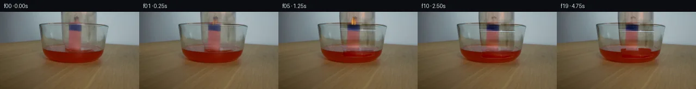

![首帧]()

Round 00
2026-11-05T17:50:52.419168+00:00像素候选变化代码 +303/−0inspection 更新
pixels 859899e12ec2343c · code bb0d1c2a1c159776
查看本轮 generate.py 真实 diff
--- previous/generate.py
+++ current/generate.py
@@ -0,0 +1,303 @@
+"""Deterministic source-pixel continuation using local optical-layer warps and fields."""
+from pathlib import Path
+import json
+import numpy as np
+from PIL import Image, ImageDraw
+from scipy.ndimage import map_coordinates, gaussian_filter
+from artifact_io import save
+
+ROOT = Path(__file__).resolve().parent
+H, W, N = 144, 256, 20
+SOURCE = np.asarray(Image.open(ROOT / 'first_frame.png').convert('RGB'), dtype=np.uint8)
+I = SOURCE.astype(np.float64)
+Y, X = np.mgrid[:H, :W].astype(np.float64)
+S = 4
+HY, HX = np.mgrid[:H*S, :W*S].astype(np.float64)
+HX = (HX + .5) / S - .5
+HY = (HY + .5) / S - .5
+
+
+def smooth(q):
+ q = np.clip(q, 0., 1.)
+ return q*q*(3.-2.*q)
+
+
+def reduce(field):
+ tail = field.shape[2:]
+ return field.reshape(H, S, W, S, *tail).mean(axis=(1, 3))
+
+
+def blend(a, color, alpha):
+ return a*(1.-alpha[..., None]) + np.asarray(color)*alpha[..., None]
+
+
+def sample(a, x, y, order=1):
+ return np.stack([map_coordinates(a[..., c], [y, x], order=order,
+ mode='nearest', prefilter=order > 1)
+ for c in range(3)], axis=-1)
+
+
+# Interpolate the bowl/background through the narrow glass region. This uses
+# rows from this input only. The source optical residual retains real texture.
+plate = I.copy()
+for y in range(H):
+ left = np.median(I[y, 104:111], axis=0)
+ right = np.median(I[y, 182:189], axis=0)
+ for x in range(109, 183):
+ u = np.clip((x-109.)/73., 0., 1.)
+ plate[y, x] = left*(1-u)+right*u
+
+left_edge = 111.6 + .095*np.minimum(Y, 68.)
+right_edge = 178.4 - .008*Y
+u = (X-145.0)/32.7
+lower_edge = 69.4 + 5.0*np.sqrt(np.maximum(0., 1.-u*u))
+jar_mask = (smooth((X-left_edge+1.15)/1.8)
+ * smooth((right_edge-X+1.15)/1.8)
+ * smooth((lower_edge-Y+1.05)/1.6))
+raw_optics = I-plate
+optics = raw_optics.copy()
+
+# The opaque shafts, heads, and existing small warm combustion region are
+# excluded from moving optics. Recover their stationary contribution by
+# interpolating the optical field from their immediate clear-glass neighbors.
+for y in range(8, 76):
+ lc = np.mean(raw_optics[y, 119:125], axis=0)
+ rc = np.mean(raw_optics[y, 153:162], axis=0)
+ for x in range(125, 153):
+ u = np.clip((x-123.)/31., 0., 1.)
+ # Include fine column variation, without transporting match pixels.
+ optics[y, x] = lc*(1.-u)+rc*u
+optics *= jar_mask[..., None]
+clean = I-optics
+
+# Background behind the initial faint warm spot. It is only revealed gradually
+# when combustion ceases; it does not remove any of the charcoal match heads.
+spot_mask = smooth(1.-((X-140.)/6.1)**2-((Y-16.0)/7.2)**2)
+spot_mask *= smooth((23.-Y)/2.0) * smooth((Y-8.)/2.0)
+spot_back = clean.copy()
+for y in range(8, 24):
+ lc = np.mean(clean[y, 127:132], axis=0)
+ rc = np.mean(clean[y, 149:154], axis=0)
+ for x in range(132, 149):
+ u = (x-131.)/19.
+ spot_back[y, x] = lc*(1.-u)+rc*u
+
+head_mask = smooth((X-126.5)/1.1)*smooth((149.2-X)/1.1)
+head_mask *= smooth((Y-24.)/1.5)*smooth((35.8-Y)/1.5)
+shaft_mask = smooth((X-126.0)/1.4)*smooth((150.2-X)/1.4)
… diff truncated; 216 more lines …